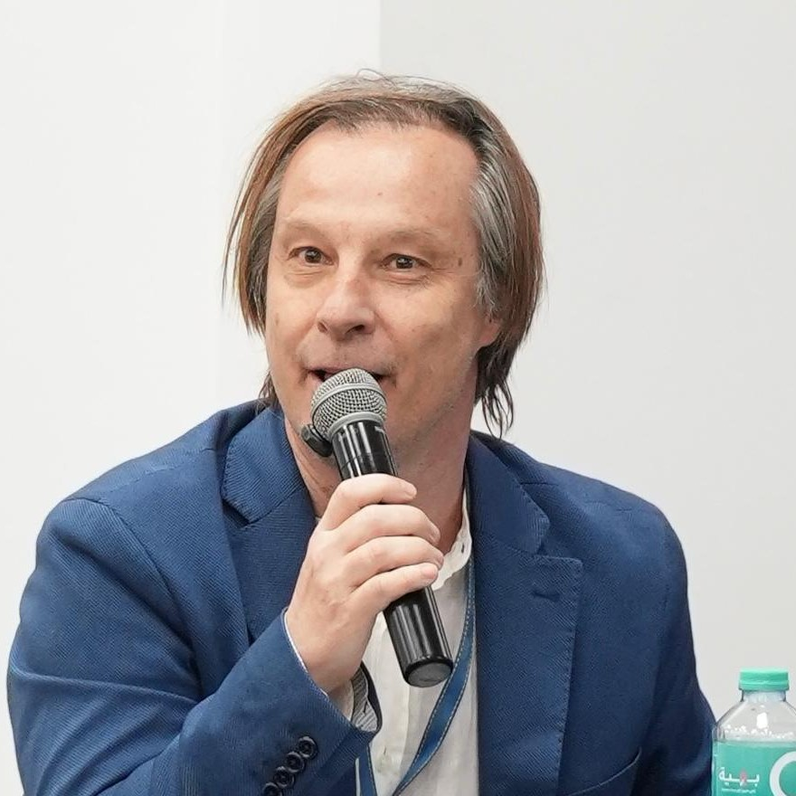

Applied Health · Development Economics · Machine Learning
Independent Scholar · Former Marie Curie Fellow
Empirical economist applying quantitative and machine-learning methods to questions in health economics, development, and the knowledge economy across developing and emerging economies.

Antonio Rodríguez Andrés is a Professor of Economics whose research applies quantitative and machine-learning methods to questions in health economics and development economics. His work examines the determinants of population health and well-being, the diffusion of technology and the knowledge economy across developing and emerging economies, and the institutional foundations of economic performance.
He holds a PhD in Economics from the University of Southern Denmark, an M.Sc. in Economics from the University of Lausanne, and an M.Sc. from Universidad Carlos III de Madrid. His research has appeared in international peer-reviewed journals including Technological Forecasting and Social Change, Expert Systems with Applications, Health Policy, the Journal of Development Studies, and the Journal of the Knowledge Economy.
He has held academic appointments in eight countries — Denmark, Colombia, Spain, Chile, Morocco, Cyprus, the Czech Republic, and Egypt — most recently as Full Professor of Economics at the German University in Cairo (2021–2026). He was awarded a Marie Curie Fellowship at the University of Sheffield and serves on the editorial boards of The Economic and Labour Relations Review and PLOS ONE (Economics).
Empirical questions in development and health, increasingly answered with modern computational and econometric tools.
Measuring and classifying the knowledge economy in Africa and emerging markets; intellectual property rights, technological progress, and innovation systems.
Applied health economics — suicide and mental health, health-care utilization, and the socio-economic determinants of well-being.
Deep learning, model-based clustering, and unsupervised pattern recognition applied to economic development and classification problems.
Panel-data models, time-series and change-point analysis, and instrumental-variable methods for causal questions.
Corruption, governance, trade facilitation, and the role of formal institutions in economic performance across Africa and MENA.
Bibliometric and scientometric analysis; software piracy, copyright protection, and IPR harmonization.
More than twenty years teaching economics and econometrics — on-site and online — across Europe, Latin America, Africa, and the Middle East.
A curated, searchable list of peer-reviewed journal articles. Filter by theme or search by title, co-author, or journal. Quartile ranks (JCR/SJR) are shown where available.
Open to research collaboration, PhD supervision, seminars, and policy work.